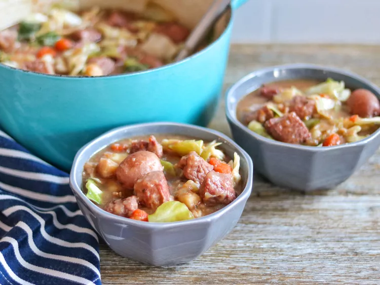

This hearty corned beef stew is delightful, with complex flavors from the corned beef spice packet and the addition of vinegar. It makes a wonderful meal for St. Patrick's Day.
Prep Time: 30 minutes
Cook Time: 2 hrs 30 mins
Total Time: 3 hrs
Servings: 8
Place flour into a large bowl; add corned beef cubes and toss to coat.
Step 2Heat olive oil in a large heavy pot or Dutch oven over medium heat. Add beef cubes and brown on all sides, about 10 minutes. Sprinkle spice packet over meat, then mix in potatoes, parsnips, carrots, and onion. Add water, stout beer, beef broth, and any unused flour; stir to combine. Bring to a boil.
Step 3Reduce the heat to low and simmer until corned beef is very tender and the stew has thickened, 2 to 2 1/2 hours.
Step 4Mix cabbage into the stew and simmer until tender, about 15 minutes. Stir in vinegar.